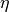
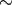
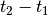
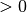
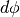
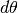

DEFINITIONS OF PARAMETERS¶
Input for Cartesian mode¶
Following are descriptions of parameters in input.txt
Note
all parameter names are capital sensitive.
TITLE: title of your case, only used for log file.
SPECIFICATION OF MULTI-PROCESSORS
- PX: processor numbers in X
- PY : processor numbers in Y
Note
PX and PY must be consistency with number of processors defined in mpirun command, e.g., mpirun -np n (where n = px . py). For versions 3.0 or lower, PX (PY) should be a common factor of Mglob(Nglob).
SPECIFICATION OF WATER DEPTH
- DEPTH_TYPE: depth input type.
DEPTH_TYPE=DATA: from a depth file.
The program includes several simple bathymetry configurations such as
DEPTH_TYPE=FLAT: flat bottom, need DEPTH_FLAT
DEPTH_TYPE=SLOPE: plane beach along x direction. It needs three parameters: slope,SLP, slope starting point, Xslp and flat part of depth, DEPTH_FLAT
DEPTH_FILE: bathymetry file if DEPTH_TYPE=DATA, file dimension should be Mglob x Nglob with the first point as the south-west corner. The read format in the code is shown below.
DO J=1,Nglob
READ(1,*)(Depth(I,J),I=1,Mglob)
ENDDO
DEPTH_FLAT: water depth of flat bottom if DEPTH_TYPE=FLAT or DEPTH_TYPE=SLOPE (flat part of a plane beach).
SLP: slope if DEPTH_TYPE=SLOPE
Xslp: starting x (m) of a slope, if DEPTH_TYPE=SLOPE
SPECIFICATION OF RESULT FOLDER
- RESULT_FOLDER: result folder name, e.g., RESULT_FOLDER = /Users/tmp/
SPECIFICATION OF DIMENSION
- Mglob: global dimension in x direction.
- Nglob: global dimension in y direction.
SPECIFICATION OF TIME
- TOTAL_TIME: simulation time in seconds
- PLOT_INTV: output interval in seconds (Note, output time is not exact because adaptive dt is used.)
- SCREEN_INTV: time interval (s) of screen print.
- PLOT_INTV_STATION: time interval (s) of gauge output
- DT_fixed: time step (s) if use fixed DT. But DT_fixed will be checked by CFL. IF not satisfy CLF, DT/2, DT/4 ... will be checked until it satisfy CFL. Default is using variable DT based on CFL.
SPECIFICATION OF GRID SIZE
- DX: grid size(m) in x direction.
- DY: grid size(m) in y direction.
HOT START OR INITIAL CONDITION
- INT_UVZ : logical parameter for initial condition, default is FALSE
- ETA_FILE: name of file for initial , e.g., ETA_FILE= /Users/results/eta_00100, data could be the last results from a previous run. Data format is the same as the output/depth files.
- U_FILE: name of file for initial u, e.g.,U_FILE= /Users/results/u_00100. If no U_FILE specified, use zeros.
- V_FILE: name of file for initial v, e.g., V_FILE= /Users/results/v_00100. If no V_FILE specified, use zeros.
- MASK_FILE: name of file for initial MASK, e.g., MASK_FILE= /Users/results/mask_00100. A MASK_FILE could be from a model output and the format is REAL numbers. If there is no MASK_FILE, MASK values will be re-specified according to ETA and DEPTH.
SPECIFICATION OF WAVEMAKER
WAVEMAKER: wavemaker type.
- WAVEMAKER = INI_REC: initial rectangular hump
need Xc,Yc and WID
- WAVEMAKER = LEF_SOL: left boundary solitary
need AMP,DEP, and LAGTIME
- WAVEMAKER = INI_SOL: initial solitary wave propagate in +y direction, WKN B solution
need AMP, DEP, and XWAVEMAKER
WAVEMAKER = INI_OTH: other initial distribution specified in the code by users
- WAVEMAKER = WK_REG: Wei and Kirby 1999 internal wave maker
need Xc_WK, Yc_WK, Ywidth_WK, Tperiod, AMP_WK, DEP_WK, Theta_WK, and Time_ramp (factor of period)
- WAVEMAKER = WK_IRR: Wei and Kirby 1999 TMA spectrum wavemaker
need Xc_WK, Yc_WK, Ywidth_WK, DEP_WK, Time_ramp, Delta_WK, FreqPeak, FreqMin,FreqMax, Hmo, GammaTMA(default: 3.3 ), ThetaPeak (default: 0.0), Nfreq(default: 45), Ntheta(default: 24)
EqualEnergy (=T means the frequency splitting is based on Equal-Energy, otherwise, based on Equal-Frequency space
- WAVEMAKER = JON_2D: JONSWAP spectrum wavemaker
need Xc_WK, Yc_WK, Ywidth_WK, DEP_WK, Time_ramp, Delta_WK, FreqPeak, FreqMin,FreqMax, Hmo, GammaTMA(default: 3.3 ), ThetaPeak (default: 0.0),Nfreq(default: 45), Ntheta(default: 24)
- WAVEMAKER = JON_1D: JONSWAP 1D spectrum wavemaker
need Xc_WK, Yc_WK, Ywidth_WK, DEP_WK, Time_ramp, Delta_WK, FreqPeak, FreqMin,FreqMax, Hmo, GammaTMA(default: 3.3 ), Nfreq(default: 45)
- WAVEMAKER = TMA_1D: TMA 1D spectrum wavemaker
need Xc_WK, Yc_WK, Ywidth_WK, DEP_WK, Time_ramp, Delta_WK, FreqPeak, FreqMin,FreqMax, Hmo, GammaTMA(Note, still use TMA Gamma, default: 3.3 ), Nfreq(default: 45)
- WAVEMAKER = WK_TIME_SERIES:
fft a time series to get each wave component and then use Wei and Kirby’s ( 1999) wavemaker. The wave angle is zero (x direction) for all wave components. Need input WaveCompFile (including 3 columns: per,amp,pha) and NumWaveComp,PeakPeriod,DEP_WK, Xc_WK,Ywidth_WK
WAVEMAKER = WAVE_DATA: 2D directional spectrum data specified in WaveCompFile. Need Xc_WK, Yc_WK, DEP_WK, Delta_WK.
Format of WaveCompFile:
62 35 - NumFreq NumDir
0.0925000011921 - PeakPeriod
0.0400 - Freq
0.0475 - Freq
...
-0.05 - Dir (rad)
0.0 - Dir (rad)
...
0.01133044 0.00973217 ... (amplitude,m)
The read format in fortran:
OPEN(1,FILE=TRIM(WaveCompFile))
READ(1,*)NumFreq,NumDir
ALLOCATE (Amp_Ser(NumFreq,NumDir), &
Per_Ser(NumFreq),Theta_Ser(NumDir))
READ(1,*)PeakPeriod
DO J=1,NumFreq
READ(1,*)Per_Ser(J)
ENDDO
DO I=1,NumDir
READ(1,*)Theta_Ser(I)
ENDDO
DO I=1,NumDir
READ(1,*)(Amp_Ser(J,I),J=1,NumFreq)
ENDDO
CLOSE(1)
WAVEMAKER = GAUSIAN: initial Gausian hump, need AMP, Xc, Yc, and WID.
Definations
- AMP : amplitude (m) of initial , if WAVEMAKER = INI_REC, WAVEMAKER = INI_SOL, WAVEMAKER = LEF_SOL.
- DEP: water depth at wavemaker location, if WAVEMAKER = INI_SOL, WAVEMAKER = LEF_SOL.
- LAGTIME, time lag (s) for the solitary wave generated on the left boundary, e.g., WAVEMAKER = LEF_SOL.
- XWAVEMAKER: x (m) coordinate for WAVEMAKER = INI_SOL.
- Xc: x (m) coordinate of the center of a rectangular hump if WAVEMAKER = INI_REC.
- Yc: y (m) coordinate of the center of a rectangular hump if WAVEMAKER = INI_REC.
- WID: width (m) of a rectangular hump if WAVEMAKER = INI_REC, or INI_GAU.
- Time_ramp: time ramp (s) for Wei and Kirby (1999) wavemaker. Default: 0.0.
- Delta_WK: width parameter
for Wei and Kirby (1999) wavemaker. Need trial and error, usually,
- DEP_WK: water depth (m) for Wei and Kirby (1999) wavemaker.
- Xc_WK: x coordinate (m) for Wei and Kirby (1999) wavemaker.
- Ywidth_WK: width (m) in y direction for Wei and Kirby (1999) wavemaker. Default: LARGE (999999.0).
- Tperiod: period (s) of regular wave for Wei and Kirby (1999) wavemaker.
- AMP_WK: amplitude (m) of regular wave for Wei and Kirby (1999) wavemaker.
- Theta_WK: direction (degrees) of regular wave for Wei and Kirby (1999) wavemaker. Note: it may be adjusted if a periodic boundary condition is used. A warning will be given if adjustment is made.
- Nfreq: number of frequency components. Default: 45.
- Ntheta: number of direction components. Default: 24.
- FreqPeak: peak frequency (1/s) for Wei and Kirby (1999) irregular wavemaker.
- FreqMin: low frequency cutoff (1/s) for Wei and Kirby (1999) irregular wavemaker.
- FreqMax: high frequency cutoff (1/s) for Wei and Kirby (1999) irregular wavemaker.
- Hmo: Hmo (m) for Wei and Kirby (1999) irregular wavemaker.
- GammaTMA, TMA parameter
for Wei and Kirby (1999) irregular wavemaker. GammaTMA = 3.3 if JONSWAP is used.
- ThetaPeak: peak direction (degrees) for Wei and Kirby (1999) irregular wavemaker.
- Sigma_Theta: parameter of directional spectrum for Wei and Kirby (1999) irregular wavemaker.
SPECIFICATION OF PERIODIC BOUNDARY CONDITION
- PERIODIC: logical parameter for periodic boundary condition in the y direction, T - periodic, F - wall boundary condition.
SPECIFICATION OF SPONGE LAYER
- DIRECT_SPONGE: logical parameter for L-D type sponge, T - sponge layer, F - no sponge layer.
- FRICTION_SPONGE: logical parameter for friction type sponge, T - sponge layer, F - no sponge layer.
- DIFFUSION_SPONGE: logical parameter for diffusion type sponge, T - sponge layer, F - no sponge layer.
- Csp: The maximum diffusion coefficient for diffusion type sponge. Default: 1.0
- CDsponge: The maximum Cd for friction type sponge. Default: 10.0
- Sponge_west_width: width (m) of sponge layer at west boundary.
- Sponge_east_width: width (m) of sponge layer at east boundary.
- Sponge_south_width: width (m) of sponge layer at south boundary.
- Sponge_north_width width (m) of sponge layer at north boundary
- R_sponge: decay rate in L-D type sponge layer. Its values are between 0.85  0.95. Default: 0.85.
- A_sponge: maximum damping magnitude in L-D type sponge. The value is 5.0. Default: 5.0
SPECIFICATION OF OBSTACLES or BREAKWATER
- OBSTACLE_FILE: name of obstacle file. 1 - water point, 0 - permanent dry point. Data dimension is (Mglob . Nglob). Data format is the same as the depth data. Full reflection condition is used at OBSTACLE points.
- BREAKWATER_FILE: name of breakwater file. The file contains width (m) at the breakwater points with the same format as the depth file. Zero for non-breakwater poionts. The width is not the breakwater with but width of sponge layers placed at the breakwater points. For a field case, use 10m-30m for weak absorption and >30m for strong absorption. Calibration may be needed case by case. Default: no breakwater.
SPECIFICATION OF PHYSICS
- DISPERSION: logical parameter for inclusion of dispersion terms. T - calculate dispersion, F - no dispersion terms. Default: T.
- Gamma1: parameter for linear dispersive terms. 1.0 - inclusion of linear dispersive terms, 0.0 - no linear dispersive terms. Default: 1.0.
- Gamma2: parameter for nonlinear dispersive terms. 1.0 - inclusion of nonlinear dispersive terms, 0.0 - no nonlinear dispersive terms. Default: 1.0.
Gamma1=1.0, Gamma2=0.0 for NG’s equations.
Gamma1=1.0, Gamma2=1.0 for the fully nonlinear Boussinesq equations.
- Gamma3: parameter for linear shallow water equations (Gamma3 = 1.0). When Gamma3 = 0.0, Gamma1 and Gamma2 automatically become zero. Default: 1.0.
- Beta_ref: parameter
defined for the reference level.
- VISCOSITY_BREAKING : logical parameter for viscous breaking. When this option is selected, Cbrk1 and Cbrk2 needed. Default is shock-capturing type breaking
- SWE_ETA_DEP: ratio of height/depth for switching from Boussinesq to NSWE for shock-capturing breaking. The value is 0.80.
SPECIFICATION OF FRICTION
FRICTION_MATRIX: logical parameter for homogeneous and inhomogeneous frction feild. T - inhomogeneous, F - homogeneous. Default: F.
FRICTION_FILE: file file if FRICTION_MATRIX= T , file dimension should be Mglob x Nglob with the first point as the south-west corner. The read format in the code is shown below.
DO J=1,Nglob
READ(1,*)(Cd(I,J),I=1,Mglob)
ENDDO
Cd_fixed: fixed bottom friction coefficient.
SPECIFICATION OF NUMERICS
- Time_Scheme: stepping option, Runge_Kutta or Predictor_Corrector (not suggested for this version). Default: Runge_Kutta.
- HIGH_ORDER: spatial scheme option, FOURTH for the fourth-order, THIRD for the third-order, and SECOND for the second-order (not suggested for Boussinesq modeling). Default: FOURTH.
- CONSTRUCTION: construction method, HLL for HLL scheme, otherwise for averaging scheme. Default: HLL.
- CFL: CFL number, CFL 0.5 (default).
- FroudeCap: cap for Froude number in velocity calculation for efficiency. The value could be 1.0 10.0. Default: 3.0
- MinDepth: minimum water depth (m) for wetting and drying scheme. Suggestion: MinDepth = 0.001 for lab scale and 0.01 for field scale. Defaut: 0.01.
- MinDepthFrc: merge to MinDepth for Version 3.1 or higher.
- SHOW_BREAKING: logical parameter to calculate breaking index. Note that, if VISCOSITY_BREAKING is not selected, breaking is calculated using shock wave capturing scheme. The index calculated here is based on Kennedy et al. (2000).
- Cbrk1: parameter C1 in Kennedy et al. (2000). Default: 0.65
- Cbrk2: parameter C2 in Kennedy et al. (2000). Default: 0.35
- WAVEMAKER_Cbrk: breaking parameter inside wavemaker. For some cases, wave breaks inside the wavemaker. This parameter provides Cbrk inside the wavemaker domain. For most of cases, set WAVEMAKER_Cbrk = Cbrk1 or higher. Default: LARGE.
- STEADY_TIME: starting time (
for calculating mean values, significant/RMS wave height (when WaveHeight = T, output parameter below). Default: LARGE.
- T_INTV_mean: time interval (  for calculating mean values, significant/RMS wave height (when WaveHeight = T, output parameter below). Default: LARGE.
APPLICATION OF WIND AND PRESSURE FIELD
SPECIFICATION OF WIND EFFECT
- WindForce: logical parameter representing if wind effect is taken into account. T or F.
- AirPressure: logical parameter representing if pressure effect is taken into account. T or F.
- WindWaveInteraction: logical parameter representing if wave-wind interaction (Chen et al. 2003) based on the formula presented in ‘METEO module’ in INTRODUCTION section. The parameter WindCrestPercent will be used.
- Cdw: wind stress coefficient for the quadratic formula if WindForce = T. Default: 0.002.
- WindCrestPercent: ratio of the forced wave crest height to the maximum surface elevation, if WindForce = T. Default: 100% (for storm surges).
- WindConstantField: logical parameter for constant wind field. T or F.
- WIND_FILE: file name for the constant wind field. The following is an example of data format.
wind data
100 - number of data
0.0 , 10.0 0.0 — time(s), wu, wv (m/s)
2000.0, 10.0, 0.0
8000.0, 10.0, 0.0
...
- WindHollandModel: logical parameter for Holland model. T or F.
- STORM_FILE: name of file contains paramters used for Holland hurricane model
A sample:
STORM FILE (model does not read)
Sandy - storm name
time(s), x(m), y(m), pn(mb), pc(mb), A, B (model does not read)
0.0, 800000.0, 400000.0, 1005.0, 950.0, 23.0, 1.50 - time, x,y, pn, pc, A, B
120000.0, 800000.0, 1500000.0, 1005.0, 950.0, 23.0, 1.50
- SlideModel: logical parameter for landslide model. T or F.
- SLIDE_FILE: name of file contains landslide parameters
A sample:
slide_file (not read by model)
Grilli - slide name
Length(m), Width(m), Alpha(m), Beta(m), P(unit) (not read by model)
0.395 0.68 1.0 1.0 0.082
Time, X(m), Y(m) (relative to the orgin of the coordinates) (not read by model)
0.0000 2.0340 1.8500
0.0100 2.0341 1.8500
0.0200 2.0342 1.8500
0.0300 2.0345 1.8500
...
SPECIFICATION OF OUTPUT VARIABLES
- NumberStations: number of station for output. If NumberStations , need input i,j in STATION_FILE
- DEPTH_OUT: logical parameter for output depth. T or F.
- U: logical parameter for output u. T or F.
- V: logical parameter for output v. T or F.
- ETA: logical parameter for output . T or F.
- MASK: logical parameter for output wetting-drying MASK. T or F.
- MASK9: logical parameter for output MASK9 (switch for Boussinesq/NSWE). T or F.
- SourceX: logical parameter for output source terms in x direction. T or F.
- SourceY: logical parameter for output source terms in y direction. T or F.
- P: logical parameter for output of momentum flux in x direction. T or F.
- Q: logical parameter for output of momentum flux in y direction. T or F.
- Fx: logical parameter for output of numerical flux F in x direction. T or F.
- Fy: logical parameter for output of numerical flux F in y direction. T or F.
- Gx: logical parameter for output of numerical flux G in x direction. T or F.
- Gy: logical parameter for output of numerical flux G in y direction. T or F.
- AGE: logical parameter for output of breaking age. T or F.
- HMAX: logical parameter for output of recorded maximum surface elevation . T or F.
- HMIN: logical parameter for output of recorded minimum surface elevation . T or F.
- UMAX: logical parameter for output of recorded maximum velocity . T or F.
- VORMAX: logical parameter for output of recorded maximum vorticity . T or F.
- MFMAX: logical parameter for output of recorded maximum momentum flux . T or F.
- WaveHeight: logical parameter for output of wave height, Hsig, Hrms, Havg. T or F.
- OUT_METEO: logical parameter for output of pressure field. T or F.
Input for Spherical mode¶
All input parameters, except the following grid information, are the same as for the Cartesian code.
- Lon_West: longitude (degrees) of west boundary.
- Lat_South: latitude (degrees) of south boundary.
- Dphi:  (degrees)
- Dtheta:  (degrees)
In addition, it is not necessary to specify Gamma2 (for nonlinear dispersive terms) in the spherical code.
Another feature of the spherical code is that a computational grid can be a stretched grid. For a stretched grid, a user should set StretchGrid = T and provide grid files for DX and DY and a file for Coriolis parameters at each grid point. For example,
DX_FILE = dx_str.txt
DY_FILE = dy_str.txt
CORIOLIS_FILE = cori_str.txt
However, use of a stretched grid is not recommended in terms of decrease in numerical accuracy for higher order numerical schemes.
Output files¶
The output files are saved in the result directory defined by RESULT_FOLDER in input.txt. For outputs in ASCII, a file name is a combination of variable name and an output series number such eta_00001, eta_00002, .... The format and read/write algorithm are consistent with a depth file. Output for stations is a series of numbered files such as sta_00001, sta_00002 ....
Other output formats are under development.